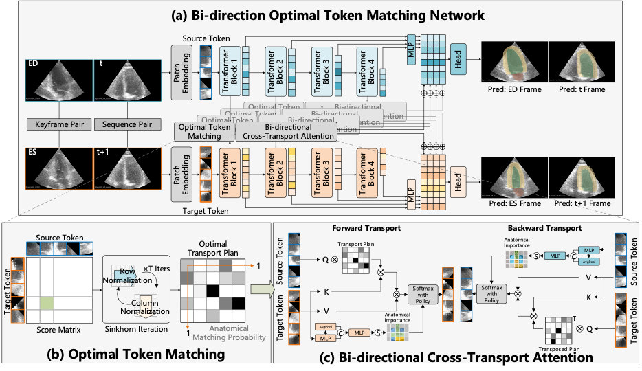
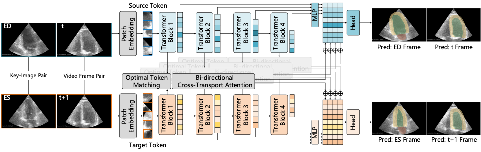
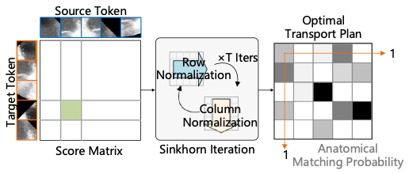
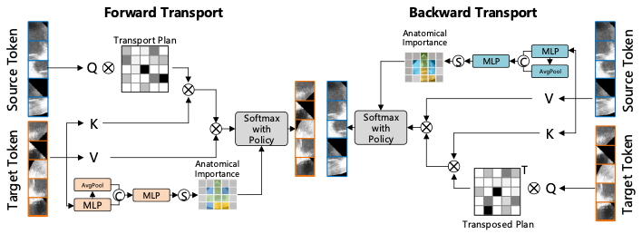
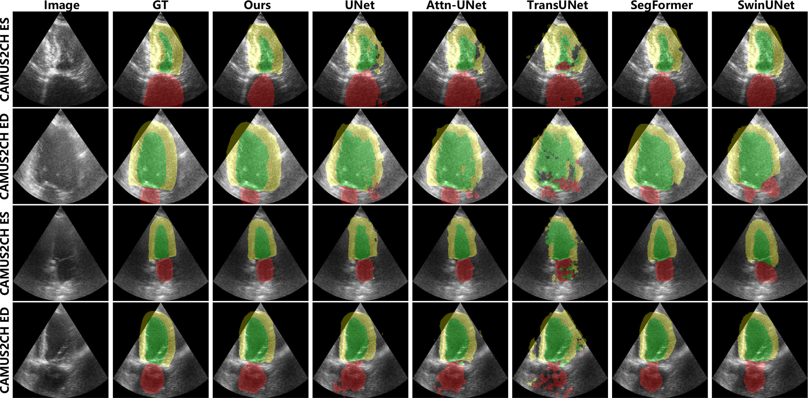
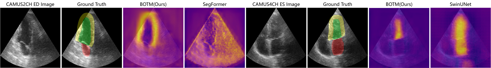

BOTM: Echocardiography Segmentation
via Bi-directional Optimal Token Matching
Abstract
Existing echocardiography segmentation methods often suffer from anatomical inconsistency challenges caused by shape variation, partial observation and region ambiguity with similar intensity across 2D echocardiographic sequences, resulting in false positive segmentation with anatomical defeated structures in challenging low signal-to-noise ratio conditions. To provide a strong anatomical guarantee across different echocardiographic frames, we propose a novel segmentation framework named BOTM (Bi-directional Optimal Token Matching) that performs echocardiography segmentation and optimal anatomy transportation simultaneously. Given paired echocardiographic images, BOTM learns to match two sets of discrete image tokens by finding optimal correspondences from a novel anatomical transportation perspective. We further extend the token matching into a bi-directional cross-transport attention proxy to regulate the preserved anatomical consistency within the cardiac cyclic deformation in temporal domain. Extensive experimental results show that BOTM can generate stable and accurate segmentation outcomes (e.g. −1.917 HD on CAMUS 2H LV, +1.9% Dice on TED), and provide a better matching interpretation with anatomical consistency guarantee.
Method

Optimal Token Matching
Finding optimal correspondences between token embeddings via Sinkhorn iterations.

Given paired echocardiographic images, we compute a cost matrix from token cosine similarity and solve the optimal transport problem using entropy-regularized Sinkhorn iterations to obtain the matching score map.
Cross-Transport Attention
Bi-directional attention proxy guided by the optimal transport plan.

We reformulate optimal token matching as a novel Bi-directional Cross-Transport Attention (BCTA) proxy, computing barycentric interpolated embeddings in both forward and backward directions.
Anatomical Importance
Learnable mask to suppress low-relevance background regions.

A learnable anatomical importance mask combines local saliency and global distribution maps to suppress regions with high matching probability but low anatomical relevance, such as background areas.
Performance

Video Segmentation
BOTM produces accurate, stable, and temporally consistent segmentation across extended frame sequences.
Segmentation Uncertainty
By incorporating token matching to enforce anatomical consistency, BOTM effectively reduces segmentation uncertainty, leading to more coherent and reliable mask boundary delineation.

BibTeX
@inproceedings{liu2025botm,
title={BOTM: Echocardiography Segmentation via Bi-directional Optimal Token Matching},
author={Liu, Zhihua and Tong, Lei and He, Xilin and Liu, Che and Arcucci, Rossella and Jin, Chen and Zhou, Huiyu},
booktitle={Proceedings of the 36th British Machine Vision Conference},
year={2025}
}